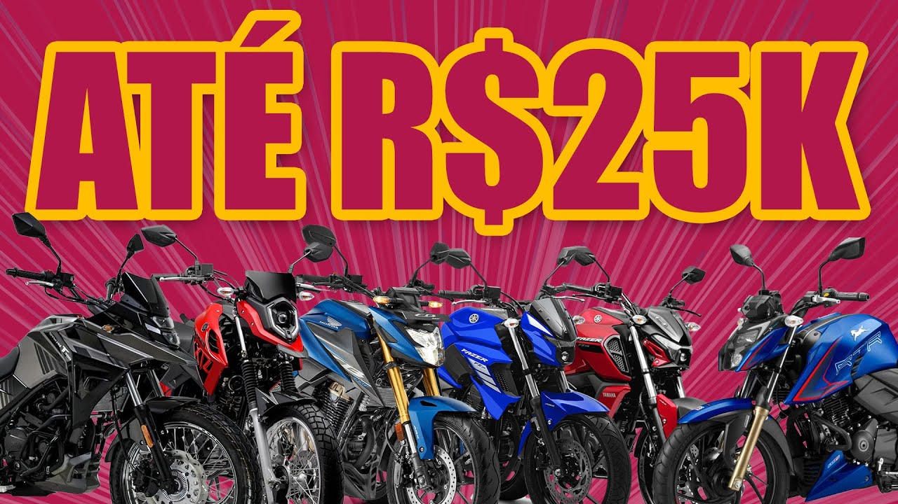
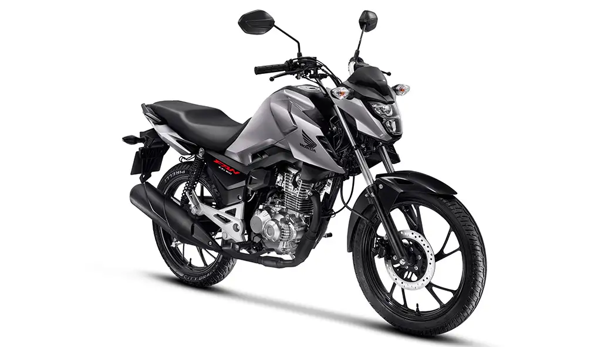
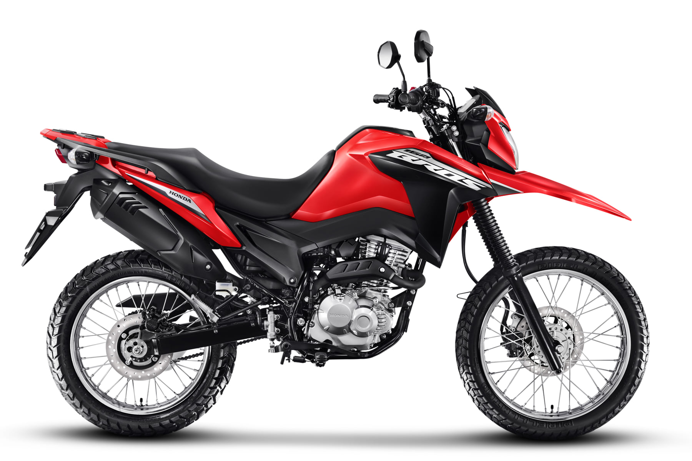
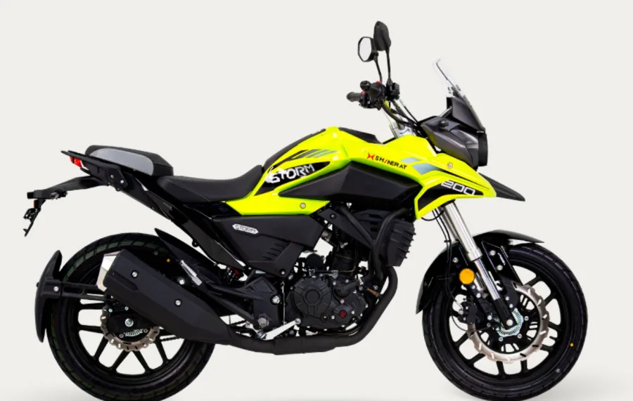

Motos até 25 mil que valem a pena em 2026

Vale a pena comprar motos até 25 mil em 2026?
Muitas pessoas procuram motos até 25 mil que valem a pena em 2026, principalmente quem deseja uma motocicleta econômica, confiável e com bom custo-benefício para o uso diário.
No Brasil, motocicletas dessa faixa de preço costumam ser muito populares entre estudantes, trabalhadores e também pessoas que utilizam a moto para deslocamentos entre cidades próximas.
Felizmente existem várias opções interessantes no mercado. Algumas motos se destacam pelo baixo consumo de combustível, enquanto outras oferecem mais potência ou conforto.
1. Honda CG 160

A Honda CG 160 continua sendo uma das motos mais vendidas do Brasil. Isso acontece por causa da sua confiabilidade mecânica e manutenção barata.
O consumo também é um dos pontos fortes do modelo, podendo chegar próximo de 40 km/l dependendo do estilo de pilotagem.
2. Yamaha FZ15

A Yamaha FZ15 é uma das motos mais modernas da categoria 150 cilindradas. Ela possui visual esportivo e um bom nível de tecnologia para a faixa de preço.
Para quem busca uma moto estilosa e econômica, a FZ15 pode ser uma ótima opção em 2026.
3. Honda Bros 160

A Honda Bros 160 é muito conhecida por sua resistência. Ela consegue enfrentar tanto o asfalto quanto estradas de terra com facilidade.
Isso faz com que seja uma ótima escolha para quem mora em cidades menores ou regiões com ruas irregulares.
4. Yamaha Fazer 250

A Yamaha Fazer 250 já entra no segmento de motos com mais potência. Mesmo assim, dependendo da região e das promoções, ela pode aparecer próxima da faixa dos 25 mil reais.
Ela é uma excelente opção para quem quer uma moto confortável para rodar na estrada.
5. Shineray Storm 200

A Shineray Storm 200 vem ganhando espaço no mercado brasileiro por oferecer um preço competitivo.
Para quem busca uma moto trail acessível e com boa altura do solo, ela pode ser uma alternativa interessante.
Conclusão
Existem várias motos até 25 mil que valem a pena em 2026. Modelos como CG 160, FZ15 e Bros 160 continuam sendo escolhas seguras para quem busca economia e confiabilidade.
Antes de escolher sua moto, é importante analisar fatores como consumo, manutenção, conforto e tipo de uso no dia a dia.
Assim fica muito mais fácil encontrar a motocicleta ideal para suas necessidades.